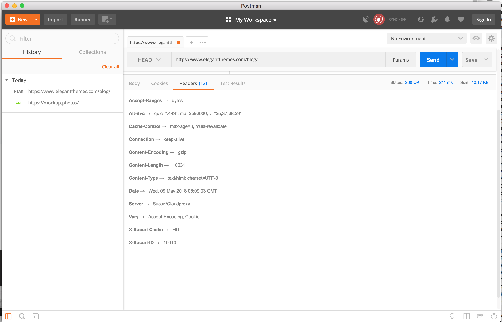

NETWORK HOME WORK
2. Play with Chrome Developers Toolkit (DevTools), and "Network" tab.
List of websites, with request and response
Wikipedia
Prom
Gismeteo
Rozetka
Pinterest
List of requests/responses fields


3. What are differences between HTTP version 1.0 and 1.1?
3.1 List of differences between 1.0 and 1.1
HTTP 1.1 має потрібний заголовок вузла по спеціифікації, HTTP 1.0 офіційно не потребує заголовка Host
HTTP 1.1 дозвляє мати постійне з'єднання, тобто ви можете мати більше одного запиту/відповіді на одне й теж HTTP з'єднання
HTTP 1.1 використовує метод OPTIONS - клієнт може використовувати цей метод для визначення можливостей HTTP-сервера. В основному він використовується для спільного використання ресурсів Cross Origin в веб-додатках
HTTP 1.0 підтримував кешування через заголовок If-Modified-Since. HTTP 1.1 розширяє підтримку кешування, використовуючи тег сутності. Також добавляються умовні заголовки If-Unmodified-Since, If-Match, If-None-Match.
В HTTP 1.1 з'являється новий код повернення 100 Continue. Це робиться з метою, щоб клієнт не відправляв великий запит, коли він навіть не впевнений чи може сервер обробити запит, тобто клієнт відправляє тільки заголовки, а сервер буде повідомляти клієнту 100 "Продовжити", продовжити роботу з тілом
3.2 How to pass user-data via GET? via POST? what is the diff?
GET
призначений для отримання даних з сервера;
тіло запиту порожнє;
обробляються на стороні сервера швидше і з меншим споживанням ресурсів сервера за рахунок пустого тіла запиту;
передача змінних відбувається в адресному рядку (так бачить користувач, технічно дані віддаються в рядку запиту) і тому видно інформація про змінних і їх значеннях (дані не захищені);
здатний передати невелику кількість даних на сервер: є обмеження на довжину URL, яке залежить від браузера, наприклад, IE6 = 2Kb. На це число і рекомендують орієнтуватися розробники Yahoo !;
може передати тільки ASCII символи;
такий запит можна скопіювати, зберегти (наприклад, в закладках);
запит може кешуватися (цим можна управляти);
для додаткового зниження навантаження на канал і сервер доступні умовні і часткові запити;
не розриває HTTP з'єднання (при включеному на сервері режимі keepAlive)
POST
призначений для відправлення даних на сервер;
передача даних відбувається в тілі запиту;
обробка на стороні сервера повільніше і «важче», ніж GET, тому що крім заголовків потрібно аналізувати тіло запиту;
здатний передати великі обсяги даних;
здатний передати файли;
сторінку, що згенерувала методом POST можна зберегти в закладки;
розриває HTTP з'єднання;
для передачі навіть дуже малого обсягу інформації більшістю браузерів відправляє мінімум два TCP пакету: заголовок, а потім тіло запиту.
Вибір методу POST чи GET
якщо за логікою відбуватиметься небезпечний запит - POST;
якщо ідемпотентність небажана - POST;
якщо потрібно передати великий обсяг даних або файл - POST;
в інших випадках використовуємо GET.
3.3 Few samples of websites (and cases) where POST method is used
Privatbank
Youtube
4. Use the "telnet" program.
5. Use actions on "Network" tab.
Використання filters/searches допомагає швидко знайти потрібний файл, що забезпечує швидкий доступ до нього.
Також можна відфільтрувати файли за розмірами, швидкістю завантаження, побачити як прорисовується вигляд сайту на певному проміжку часу - всі ці фактори дуже важливі при оптимізації сайту та налаштуванні, до прикладу, показників Google PageSpeed Insights
6. Using the hurl.it
GET request to gorgany.com

Description of each header line on response
Cache-Control - Визначає директиви механізму кешування як у запросі, так и відповіді.
Connection - Контролює, чи мережеве з'єднання залишається відкритим після завершення поточної транзакції.
Content-Encoding - Використовується для вказування алгоритму стиснення.
Content-Type - Вказує тип носія ресурсу.
Date - Містить дату та час, з якого було створено повідомлення.
Expires - Дата/час, після якої відповідь вважається застарілою.
Pragma - Залежний від реалізації заголовок, який може викликати декілька ефектів де завгодно у ланцюгу запрос-відповідь. Використвується для зворотньої сумісності з кешем HTTP/1.0, де заголовок Cache-Control ще не присутній.
Server - Містить інформацію про програмне забезпечення, яке використовується сервером-початком для обробки запиту.
Set-Cookie - Надіслати файли cookie від сервера до агента користувача.
Strict-Transport-Security - Дозволяє веб-сайту повідомити браузеру, що він повинен бути доступний тільки через HTTPS, замість того, щоб використовувати HTTP.
Vary - Визначає, як відповідати заголовкам майбутніх запитів, щоб вирішити, чи можна використовувати кешовану відповідь, а не запитувати нову з сервера походження.
7. Using the hurl.it
HEAD request to gorgany.com
8. What is the different with GET request?
GET request to gorgany.com
Як ми бачимо, при запиті HEAD сервер повертає пусте тіло документу. Запит HEAD в основному застосовується для отримання метаданих, перевірки наявності ресурсу (тобто, валідації URL) і щоб дізнатися, чи не змінився він з моменту останнього звернення.
9. Find and show few (at least 5) resources, where POST method is used
Website, where POST method is used (using Hurl.it)
Instagram
Gorgany
Komanchero
Green Forest School
BlaBlaCar
POST метод повинен використовуватися для конфіденційної інформації, такої як імена користувачів і паролі, які повинні бути представлені разом з іншими даними для завершення запиту.
10. Using the Postman extension

11. Find any free hosting that provides FTP accessgoogle "ftp free hosting", or "free hosting", etc
Розміщення вебсайту на хостингу zzz.com.ua
Street Life Shop